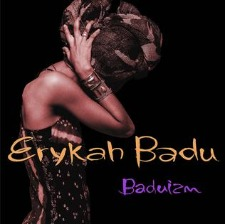
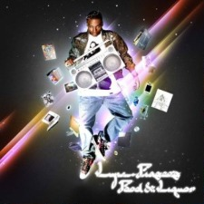

| Album | Tracks | Album Release Date | Genre | Links |
|
Erykah Badu Budaizm  |
|
February 11, 1997 | R&B, Neo Soul |
Facebook Page YouTube Music |
|
Lupe Fiasco Food and Liquior  |
|
September 19, 2006 | Hip Hop, Conscious Hip Hop |
Personal Site YouTude Music |